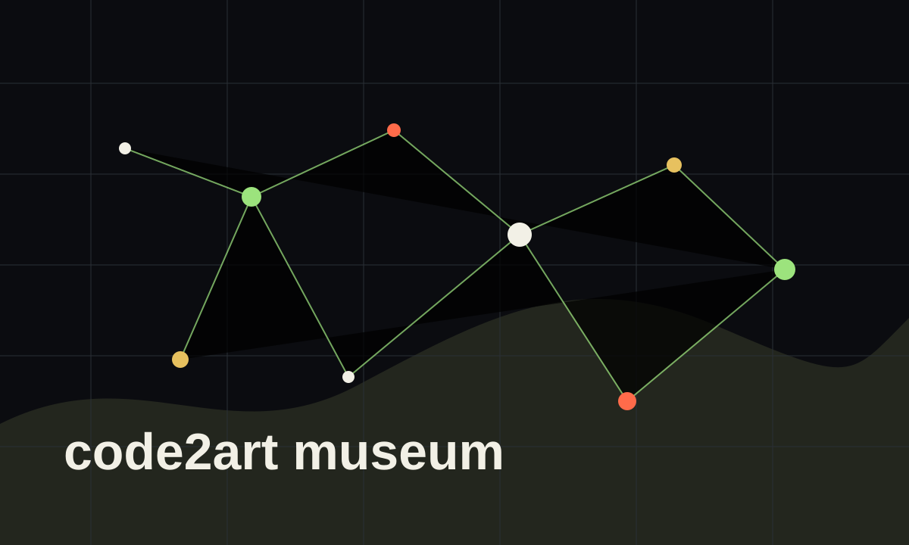

展品
作品、开源项目、Prompt、Skill、历史节点都可以成为馆藏。
 code2art museum
code2art museum
实验编程博物馆
一座由社群共同建造、永不竣工的在线数字博物馆，收藏实验编程的历史、作品、开源项目、Prompt、Skill 与人。

MVP
作品、开源项目、Prompt、Skill、历史节点都可以成为馆藏。
社群成员拥有可被引用的 Profile，展示身份、工具栈和代表作品。
代码、设计、内容、测试反馈和策展判断都会留下可追溯记录。
Phase 1
Chronicle